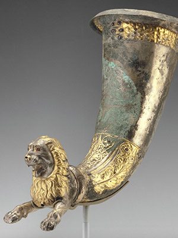

Lion Rhyton, 1st century B.C., Gilt silver, stone, and garnets 30.5 × 18.5 × 35.5 cm
(12 × 7 5/16 × 14 in.), The J. Paul Getty Museum, Villa Collection, Malibu, California
The term rhyton comes from the Greek verb meaning "to run through," and depictions of rhyta
on Greek vases show that they were used to aerate wine. Wine poured into the top of the vessel comes
out of the spout between the animal's legs. The quality of workmanship and materials and the subject
of this rhyton, a lion, communicate the original owner's wealth and status.
As Seleucid authority began to weaken in the later 200s B.C., a group of semi-nomadic people
from the steppes of south-central Asia called the Parthians challenged the dynasty; by the mid-100s
B.C., they had firm control of this area of Iran. This complicated political history left its legacy
in the art of the area. The floral motifs on the rhyton are drawn from Seleucid art, while rhyta of
this form had a long history in earlier art of Iran. (3)